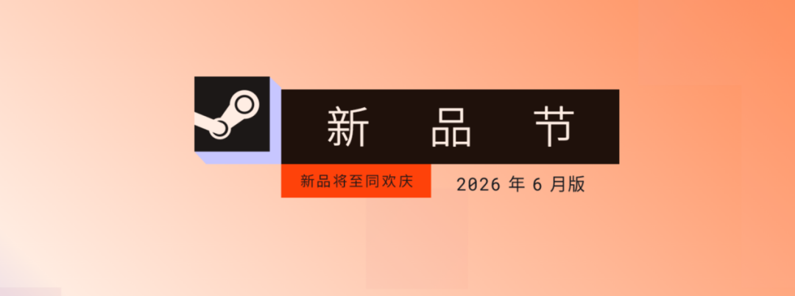
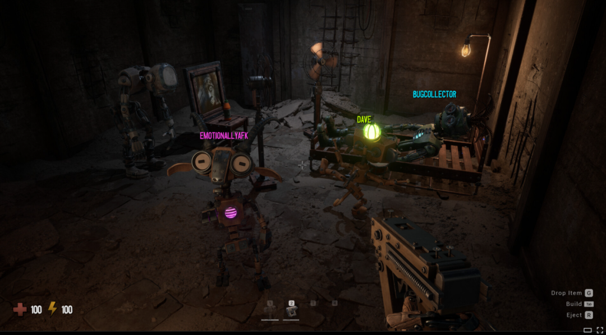
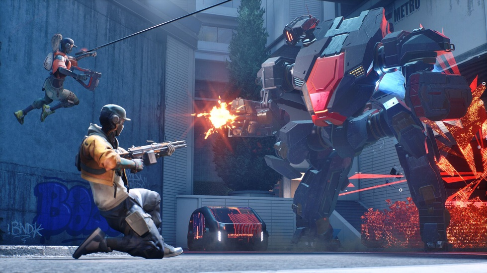
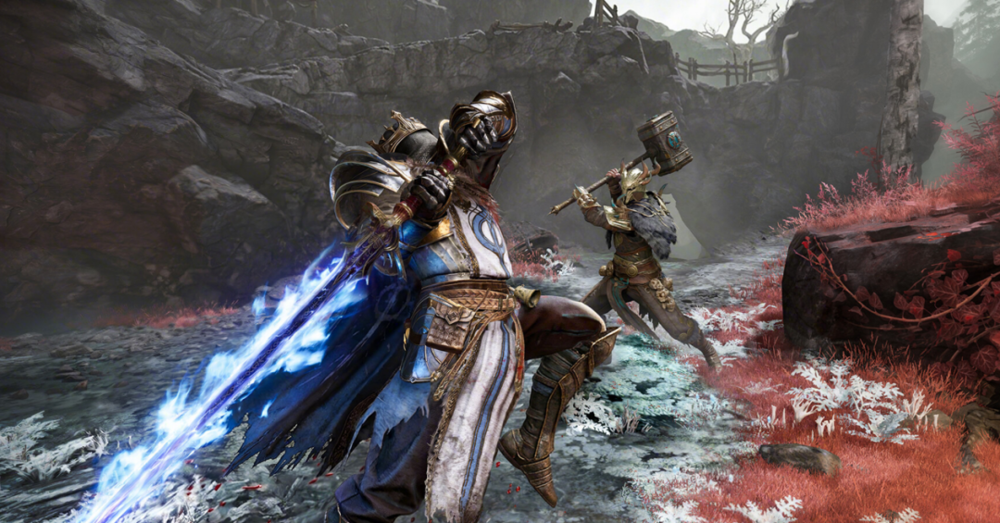

Steam6 月数据大洗牌！多人联机成主流，资本化倒逼开发规范化，国产独立游戏为何"凉"了？
当玩家对传统单机的热情逐渐冷却，整个独立游戏市场正经历一场观念重塑：曾经的“单机孤岛”时代似乎画上了句号。Steam官方刚刚揭晓的「6 月新品节最热试玩版（DEMO）」榜单显示，多人联机玩法全面井喷，这甚至成了无数开发者的救命稻草。
这份由实际不重复玩家人数排名的"50强榜单”，不仅是市场用脚投票的实录：旧有热门赛道热度消退、多人合作题材占比飙升超三分之一、适应 PC 键鼠生态的产品强势回归。三个核心变化清晰可见——从「6」到「31%，再到「键鼠优先，数据不再冰冷地陈述事实，而是鲜活的市场脉搏。

传统赛道的倦怠与新兴玩法的爆发
《吸血鬼幸存者》式动作或搜打撤模式曾辐射效应惊人，《逃离鸭科夫》更以 380 万销量成年度爆款。然而最新榜单中这类跟风现象明显减少：玩家对这些已被玩烂的套路感到厌倦，传统题材跟随者寥寥无几。「多人在线」概念的全面占领取而代之——前50款热门游戏中明确具备多人对抗或合作属性的产品多达16款以上，占比高达32%。

这一井喷背后逻辑残酷而清晰：单纯的个人创作难以承载市场期待，只有社交化内容才能打破圈层壁垒。从经典恐怖类《GRAIN ROT》，到主打直播娱乐的《BOMBANNA！》和《醉步同行》，再到模拟越野探险的《越过山丘》及足球竞技类的《Striker Club》，游戏的乐趣重心已从「孤独的体验」转移到「人与人的互动」。
为什么是多人联机？社交属性即流量密码
高居榜首的《BOMBANNA！》在国内主流视频平台轻松斩获百万点击，其核心传播路径并非依靠冷硬的评测长文。主播在直播中的欢声笑语、团队间的互怼与配合吸引了无数观众。对于开发者而言，这意味着游戏不再需要费力构建社区氛围——当三个朋友为同一张地图争吵又欢笑时，口碑就已形成。「此外，这种模式极大延长了用户停留时间，将一个人刷手机的碎片化娱乐变成群体性的沉浸体验。」短视频时代流量获取的关键法则正在于此。

资本入局带来的“规范化”转折
随着竞争白热化，许多团队不得不依附大资本或深度外包合作。韩国大厂 NEOWIZ 与 NEXON的身影出现，国内字节跳动、等平台的介入更标志着独立游戏赛道进入职业化下半场。「无论何时何地，只有真正理解玩家需求的产品才能长久。」这种变化迫使开发者告别过去粗放随性的开发模式，转向高度规范的工业化运营：宣发周期被大幅压缩，从 DEMO公布到正式版发售的时间窗口锁定在半年至一年之间。甚至出现如《EMPULSE》般在新品节结束即同步上线的“闪电战”策略。「效率不再是口号，而是生存的必需品。」
更令人欣慰的是服务意识的觉醒——多语种支持已不再是加分项而是入场券：榜单前50名中中文版本占比高达90%；制作人不再躲在幕后做单机艺术家式的自嗨，反而主动走进小黑盒、机核、等国内社区。用流利的语言和真诚的态度与玩家互动，成为全球开发者的新常态。「沟通比代码更重要。」加拿大工作室 Funselektor 的制作人 Dune 亲自出镜详解创作初衷并实时回复评论区，标志着对本地化市场的重视已达新高度。

国产独立游戏的冷思考
相比之下，6月国内独立游戏表现相对冷清：虽然《雾影猎人》等少数精品依然亮眼，但整体声浪远不及往年年初那种“群狼出击”的景象。「这既受限于前期流量过于集中导致的后续乏力。」题材同质化（如大量武侠、三国题材）也阻碍了海外推广。更深层次的原因在于运营思维的差异：部分国内团队虽接受资本扶持，但在管理上依然松散，宣发节奏不稳，难以适应如今「快进快出」的商业环境。「加上众筹信任危机等遗留问题，使得国产独立游戏在商业化规范化和玩家服务水准上与海外同行存在客观差距。」
结语
拒绝做“单机孤岛”，不仅是玩法的升级，更是生存方式的进化。孤独的艺术表达或许依然动人，但唯有拥抱社交、规范运营、深耕本地化服务的独立游戏产品才能真正穿越周期的迷雾。「对于开发者而言，学习如何让游戏成为连接人与人之间的桥梁，或许是当下破局的关键。」而对于玩家来说，我们也将看到更多元、更热闹的游戏世界在等待探索。
关于我们
📱 公众号名称：三天游戏
✍️ 作者：曾三天
扫码关注公众号，获取每日最新资讯

商务合作与版权
商务合作 / 内容投稿 / 品牌推广
请关注公众号「三天游戏」后台留言联系
版权声明：本文由作者整理，转载需注明出处。